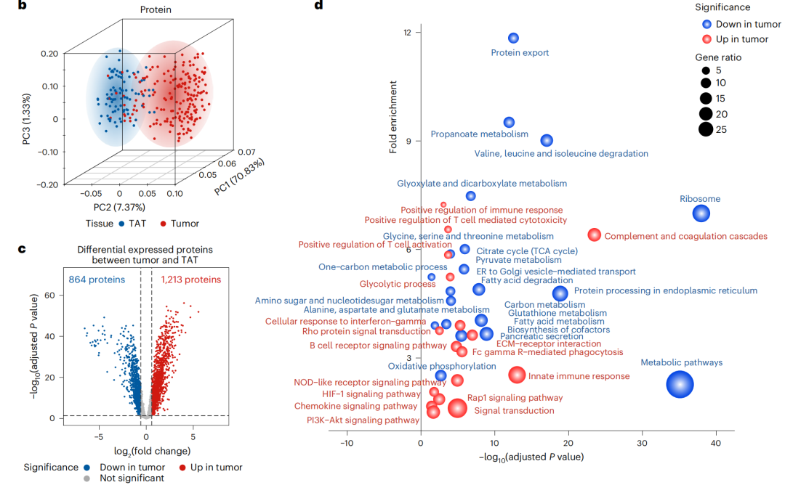

01 / 17文献原图 · 教程引述
分组富集条形图
通路、显著性与关键基因，同一张图里读懂。
Nature首次发表 2023-10-31 · 卷期 2023-12-21
CHIT1-positive microglia drive motor neuron ageing in the primate spinal cord
面板 d · 教程引述局部图
公众号来源
Nature单细胞富集分析条形图复现 将数据路径替换为自己的文件路径，再粘贴给 Agent 使用。
18 款生信可视化，涵盖功能富集与单细胞图形。从文献原图里寻找表达方式。选好样式，用 xinye-vis-mcp 绘制你自己的分析结果。
浏览图形案例 ↘
NATURE MEDICINE · 2024 · FIG. 1b–d17 个案例 · 点击放大原图，查看文献出处与发表日期。
通路、显著性与关键基因，同一张图里读懂。
CHIT1-positive microglia drive motor neuron ageing in the primate spinal cord
将数据路径替换为自己的文件路径，再粘贴给 Agent 使用。
用渐变与条内标签，突出富集结果的层次。
将数据路径替换为自己的文件路径，再粘贴给 Agent 使用。
把通路的相似性与富集强度放在一起。
Defining the KRAS- and ERK-dependent transcriptome in KRAS-mutant cancers
将数据路径替换为自己的文件路径，再粘贴给 Agent 使用。
让字号与色彩成为通路的另一种语言。
Defining the KRAS- and ERK-dependent transcriptome in KRAS-mutant cancers
将数据路径替换为自己的文件路径，再粘贴给 Agent 使用。
沿 NES 排名，读出通路的整体变化。
Defining the KRAS- and ERK-dependent transcriptome in KRAS-mutant cancers
将数据路径替换为自己的文件路径，再粘贴给 Agent 使用。
在双向结果里，让关键通路先被看见。
将数据路径替换为自己的文件路径，再粘贴给 Agent 使用。
将数据路径替换为自己的文件路径，再粘贴给 Agent 使用。
曲线、命中位置与统计信息，清晰对应。
Immune responses in checkpoint myocarditis across heart, blood and tumour
将数据路径替换为自己的文件路径，再粘贴给 Agent 使用。
把基因层面的变化，连接到通路层面。
Reconstituting human primitive streak formation through extra-embryonic cell coordination
将数据路径替换为自己的文件路径，再粘贴给 Agent 使用。
将数据路径替换为自己的文件路径，再粘贴给 Agent 使用。
从样本分离、差异蛋白，到通路变化。
Prospective observational study on biomarkers of response in pancreatic ductal adenocarcinoma
将数据路径替换为自己的文件路径，再粘贴给 Agent 使用。
连接通路与成员基因，保留关系的细节。
将数据路径替换为自己的文件路径，再粘贴给 Agent 使用。
用双向条形，呈现 GSVA 差异统计量。
Phenotype molding of stromal cells in the lung tumor microenvironment
将数据路径替换为自己的文件路径，再粘贴给 Agent 使用。
在火山图下，再加一层基因集信息。
Defining the KRAS- and ERK-dependent transcriptome in KRAS-mutant cancers
将数据路径替换为自己的文件路径，再粘贴给 Agent 使用。
以彗尾表现显著性，以圆点呈现基因数。
将数据路径替换为自己的文件路径，再粘贴给 Agent 使用。
将数据路径替换为自己的文件路径，再粘贴给 Agent 使用。
将通路、基因变化和方向放入同心圆。
将数据路径替换为自己的文件路径，再粘贴给 Agent 使用。
大群虚线轮廓、亚群颜色与两级标签，保留单细胞结构。
Spatiotemporal single-cell roadmap of human skin wound healing
将数据路径替换为自己的文件路径，再粘贴给 Agent 使用。
在已安装 xinye-vis-mcp 的 Codex、WorkBuddy AI 或 ZCode 中，用自然语言指定图号、结果文件和展示参数。已有分析结果即可；单细胞 sc01 读取 UMAP 坐标与两级注释，不重复执行降维或聚类。